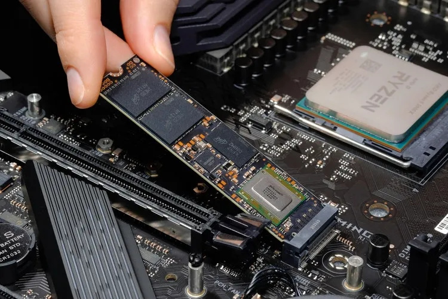

Bulding a Computer
Building a computer can seem complicated, but following these steps will make sure your pc will turn out great
Step 1. Case Prep
First step is to flip it as shown in the picture. Remove the side panel or open for direct access inside the case

Step 2. Motherboard Assembly (SSD)
Most of the parts will be attached to the motherboard. To start insert the Solid State Drive (SSD) into the slot. To do this place it at an angle with the pins facing the motherboard attachment part, then make it 90 degrees while securing it in.

Step 3. Motherboard Assembly (CPU)
Inserting the Central Proceesing Unit (CPU) requires you to be very careful, as bending one of the pins can destroy the CPU. You will either have an AMD chip, or Intel. This only means the pins will be on the motherboard, or on the CPU. Carefully hold it without touching the pins and look for a little triangle in the corner. Line that up with the slot on the motherboard and gently drop it in. To secure it pull the pin down.

Step 4. Motherboard Assembly (RAM)
Inserting the Random Access Memory (RAM) is very easy. Make sure the pins on the RAM stick are facing the motherboard, line it up, push it in until you hear a click, then secure it with the pushable piece on the side. If you have 2 sticks, choose one colour like grey, and make sure both sticks are in the same colour and not right next to each other.

Step 5. Inserting the Power Supply (PSU)
A very simple process in building a computer is inserting the Power Supply (PSU). Find the spot at the bottom of the computer case with an opening for the power supply. Rotate it so the power switch is facing the outside of the case, so you can turn it on.

Step 6. Installing The Motherboard
To install the Motherboard into the computer case, take the screws that should come with the case or motherboard, locate where the motherboad goes (refer to the case's manual) and carefully screw it in. The orientation should match the picture below.

Step 7. Plugging Everything In
This step can be complicated if you do not have experience with building computers. To get the PC to work you will need to plug all of the components into the power supply. It will come with many wires and cables but you do not need all of them. To know where each wire goes refer to the power supply manual, or look up a tutorial. The cables of the power supply should be behind the case and go to the components from little holes in the case.

Step 8. Inserting The GPU
Now that everything is plugged in you will need to insert the Graphics Processing Unit (GPU) into the motherboard. You do not need a GPU for a computer to work but this step is done later on to make it easier to install the motherboard. Plug the pins from the GPU into the motherboard slot. You may need to attach the side bracket of the GPU to the case to make sure it doesn't sag. Most cases will allow you to simply screw in the side bracket into the side of the case.
.JPG?width=1920&height=1920&fit=bounds&quality=80&format=jpg&auto=webp)
Step 9. Installing The Fans
Some cases come with fans pre-installed, but if not, this process is very simple. Choose where you want your fans to be, screw them in and plug them into the motherboard. These will usually be plugged into the pins with name CHA_FAN1 for example, but refer to the manual to be sure.

Step 10. Preparing The PC
Congrats, you have fully built your PC and now need to tun it on. Turn on the power supply, then the computer. You will need to have a USB or a way to install your operating system of choice. You may need to access the BIOS by pressing the f2 key when the computer is starting up to get any updates you need. That is all to building your computer.